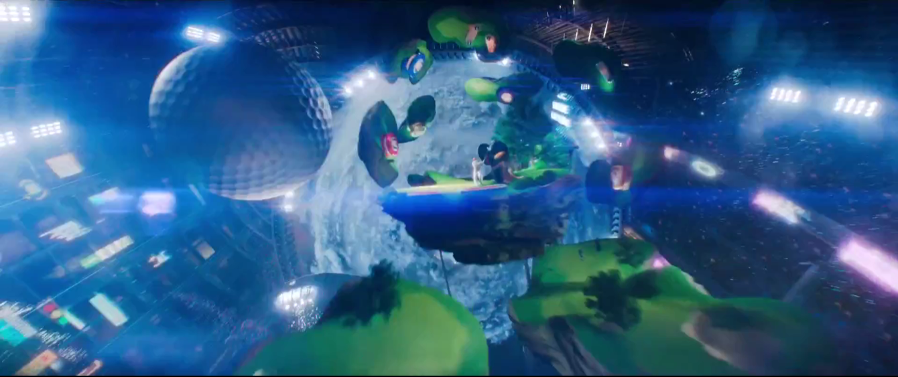
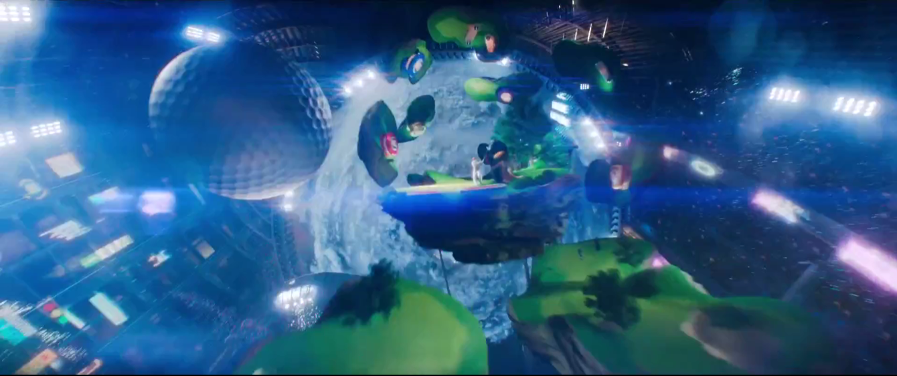

READY PLAYER ONE
In a chaotic future, humanity seeks refuge in the OASIS, a virtual world. After the death of its creator, James Halliday, a challenge is revealed: whoever solves its puzzles will control the OASIS. Wade Watts, as Parzival, competes against a malevolent corporation to win the prize. Adventure and friendship intertwine as Wade struggles to balance the virtual world with reality in a race against time.

ABOUT
Ready Player One is undoubtedly a masterpiece in the world of science fiction films, teaching us that teamwork is very important. The writers of the movie wanted to show that winning is not the most important aspect of a game.
AUTHORS

Ernest Cline is an American author, screenwriter, and spoken-word artist. He is best known for his science fiction novels "Ready Player One" and "Armada." "Ready Player One," published in 2011, became a major success and was later adapted into a film directed by Steven Spielberg in 2018. The book is set in a dystopian future and revolves around a virtual reality game that holds the key to a vast fortune.

Zak Penn is an American filmmaker, screenwriter, and director. He is known for his work on a variety of films, particularly in the realm of science fiction and superhero genres. He was also involved in the film adaptation of Ernest Cline's novel "Ready Player One." While Steven Spielberg directed the film, Zak Penn co-wrote the screenplay, contributing to the adaptation of Cline's pop culture-rich story to the big screen.
CASTING
Ready Player One has many characters, let's see the most relevant:


Wade Watts (Parzival): The protagonist of the story who embarks on a quest to find the hidden Easter Egg within the virtual reality world known as the OASIS.
Samantha Cook (Art3mis): A skilled gamer and one of the leaders of the rebellion against the corporate control of the OASIS.

Nolan Sorrento: The primary antagonist, an executive of Innovative Online Industries (IOI) who seeks to control the OASIS for profit.

Helen Harris (Aech): Wade's best friend and fellow "gunter" (egg hunter) in the OASIS.
i-Rok: A mercenary gamer and rival of the main characters.


Ogden Morrow (Curator): Co-creator of the OASIS, who left the company and now leads a reclusive life.

James Halliday (Anorak): The deceased creator of the OASIS, whose challenge drives the plot.
Toshiro Yoshiaki (Daito): He is a member of the High Five, a group of main characters who work together to solve the challenges left behind by the OASIS creator, James Halliday.


Akihide Karatsu (Sho): Sho is partnered with Daito, and together they form a strong alliance with the other main characters, particularly Parzival and Art3mis.
THE OASIS
OASIS (Ontologically Anthropocentric Sensory Immersive Simulation) is a massively multiplayer online virtual reality platform. It was created by James Halliday, a brilliant and eccentric game designer. The OASIS is accessible through special goggles and gloves, allowing users to fully immerse themselves in a digital world that offers limitless possibilities.
Within OASIS, users can interact, socialize, play, attend school, work, and participate in a wide range of activities. OASIS is not just a gaming platform; it is a complete virtual universe where people spend most of their life hours. It is designed to be a place of escapism and adventure, allowing users to experience their wildest dreams and fantasies. The OASIS contains countless planets, each with unique landscapes, environments, and themes, and is packed with characters, objects, and references from various pop culture sources.
In the context of the story, the creator of the OASIS, James Halliday, leaves behind a series of challenges and puzzles within the virtual world after his death. The person who successfully solves these challenges and finds the hidden Easter egg is promised ownership of the OASIS and the vast Halliday fortune. This forms the central plot of both the novel and the film, as various characters, including protagonist Wade Watts (Parzival), compete to find the Easter Egg and control the OASIS.
 



EVENTS
Introduction to the OASIS and Halliday's Challenge
- The film introduces the OASIS as a massive virtual reality universe where people escape their real-world troubles.
- James Halliday's video message announces the Easter Egg hunt, involving three keys and challenges that players must solve to find the hidden Easter Egg.
Parzival's Discovery of the Copper Key
- Wade Watts (Parzival) becomes the first player to discover the location of the Copper Key by deciphering clues from Halliday's past and love for '80s pop culture.
- Parzival wins the first challenge, a thrilling and dangerous race in the virtual world, using a DeLorean from "Back to the Future".
Introduction of Art3mis and IOI's Threat
- Parzival meets Art3mis (Samantha Cook), a skilled gunter who is also searching for the Easter Egg.
- The IOI corporation, led by Nolan Sorrento, is shown to be a powerful and ruthless entity seeking control of the OASIS for profit.
High Five Alliance Formation
- Parzival and Art3mis join forces with Aech, Daito, and Shoto to form the High Five alliance, sharing information and resources to solve Halliday's challenges.
Jade Key Challenge
- Parzival and Art3mis discover the location of the Jade Key by interpreting a clue involving a recreation of the movie "WarGames".
- They solve a challenge involving a dance sequence from "Saturday Night Fever".
IOI's Hunt for the First Key
- IOI identifies Parzival as a top contender and places a bounty on his head, causing Parzival and his friends to go into hiding.
The Shining Challenge
- The group faces the challenge of reenacting scenes from the movie "The Shining" to obtain the Crystal Key.
- They encounter creepy and dangerous situations within the virtual "Overlook Hotel".
Art3mis's Capture by IOI
- Art3mis is captured by IOI, forcing Parzival and the High Five to rescue her.
Final Showdown and Parzival's Victory
- Parzival and Art3mis manage to complete the final challenge, involving a nostalgic homage to a classic arcade game.
- In the climactic battle, IOI's forces and the High Five face off within the virtual world, using a variety of iconic vehicles and weapons.
Parzival's Decision and Reconciliation
- Parzival wins the Easter Egg and gains control of the OASIS.
- He decides to share control with his friends and ensures that the OASIS remains open on certain days to encourage real-world connections.
Real-World Meeting of Parzival and Art3mis
- The film ends with Wade and Samantha meeting in person outside the OASIS, symbolizing the importance of genuine human connections.
EASTER EGGS
Ready Player One is known for its extensive references to pop culture, especially from the 1980s and beyond. It's estimated that there are more than 138 Easter eggs, are scattered throughout the movie as references to various movies, video games, music, and other elements of popular media. Here are some of the notable Easter eggs found in the film:
Parzival's vehicle during the race sequence is the iconic DeLorean time machine from the "Back to the Future" series.
King Kong is seen climbing the New York skyline during the race.
The T-Rex from "Jurassic Park" makes an appearance during a chase scene.
The Iron Giant is a prominent character in the OASIS, fighting alongside the High Five in the final battle.
Parzival plays Adventure on an Atari 2600 console, which was a reference to the first Easter egg hidden in a video game.
Art3mis rides a speeder bike that's modeled after the Battletoads video game.
Chucky, the murderous doll from the "Child's Play" series, makes an appearance in a battle scene.
A reference to filmmaker Robert Zemeckis, this item is used in the film's final challenge.
The Holy Hand Grenade from "Monty Python and the Holy Grail" is used during the battle.
The "Shining" challenge features scenes from the actual movie, including the elevator of blood, Room 237, and the hedge maze.
Ryu and Chun-Li from the "Street Fighter" video game series appear in the final battle.
Godzilla is seen during the final battle in the OASIS.
REVIEWS
TxMike
This is a Spielberg movie, and even though this story is unique it has many of the movie-making elements he used in such movies as "E.T.", "Raiders", "Jurassic Park", "A.I." and more recently "The BFG". Imaginative cinematography, interesting action, and a really killer of a sound track. That alone makes it a worthwhile viewing.

Platypuschow
When the trailer came out I was unimpressed and didn't get onboard with the hype at all, yes I was impressed with all the pop culture references and characters but I figured it would be all flash and no substance. Thankfully I couldn't have been anymore wrong, Read Player One has plenty of substance, emotion and charm and I thoroughly enjoyed every minute of it.

MnemonicDevice
I've noticed quite a few reviews here from book fans complaining that the movie wasn't true to the novel. As a fan of the book, let me just say that's true but it's fine. The overarching story is the same. The fact of the matter is with a nearly 400 page novel packed full of pop culture references, some things would have to be cut to make it onto the big screen.
Dragonborn64
A non stop barrage of 80s nostalgia is what holds the movie together. The characters are your basic prototypes. I'm sure there is a big audience for this but it seemed very long to me and the cutsiness backfired at times. Not terrible but not a that memorable either.
TheLittleSongbird
Watched 'Ready Player One' as someone who got a lot of pleasure out of the book and who loves a lot of Steven Spielberg's previous work. Despite it getting a fair share of criticism from fans of the book, that there were also enough good things said about it from critics and that many of my friends said it was worthwhile persuaded me enough to see it.
ThomasDrufke
Ready Player One is quite possibly the biggest "nerd's nerd film". What I mean by that is that sure the film can be appreciated by the general public, but there's no question that the large part of the population that goes to see it won't be able to truly appreciate the ins and outs of this Easter egg filled movie. Dozens and probably even closer to hundreds of hidden gems fill this Sci-fi feature helmed by one of the all-time greatest directors, Steven Spielberg. If there's ever a film you wish you could pause, zoom-in, and rewind while in the theater, it's Ready Player One.